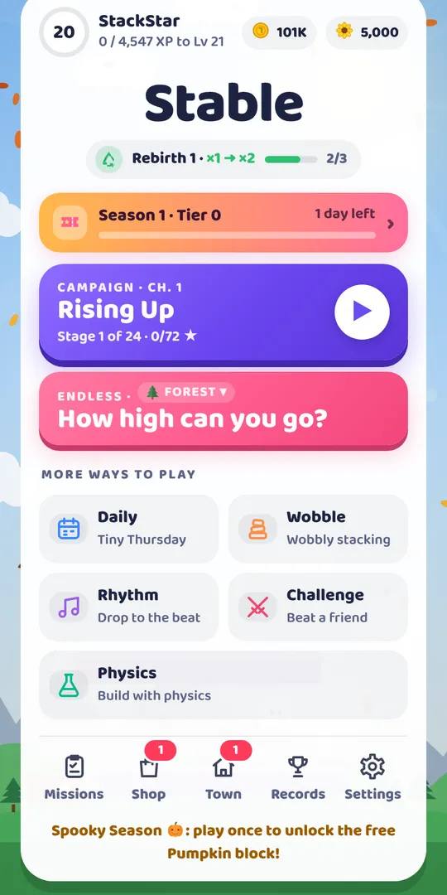
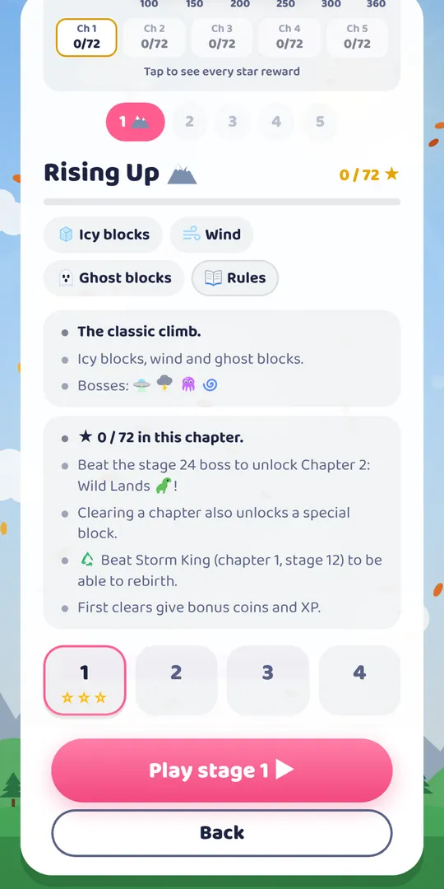
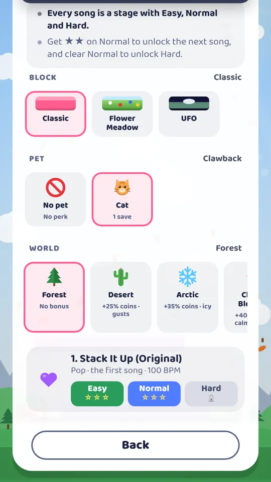
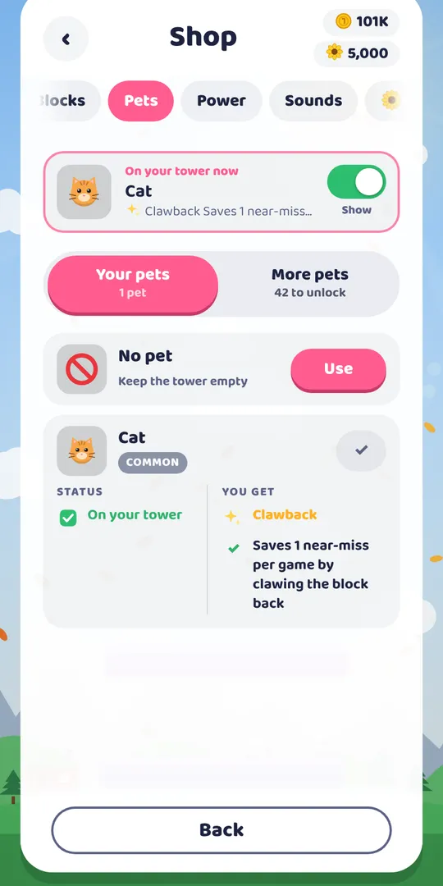
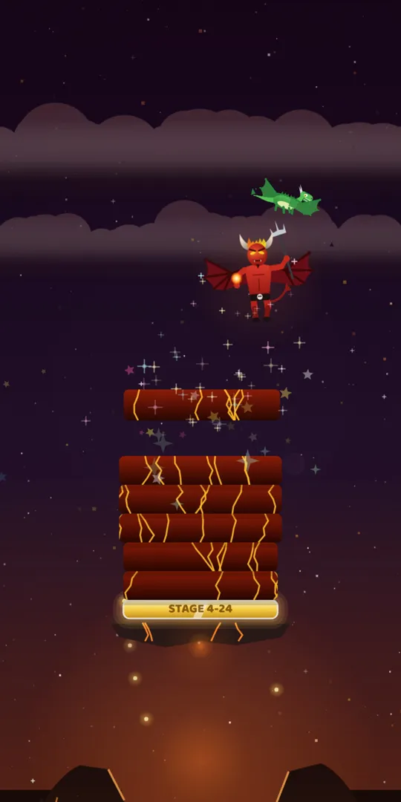
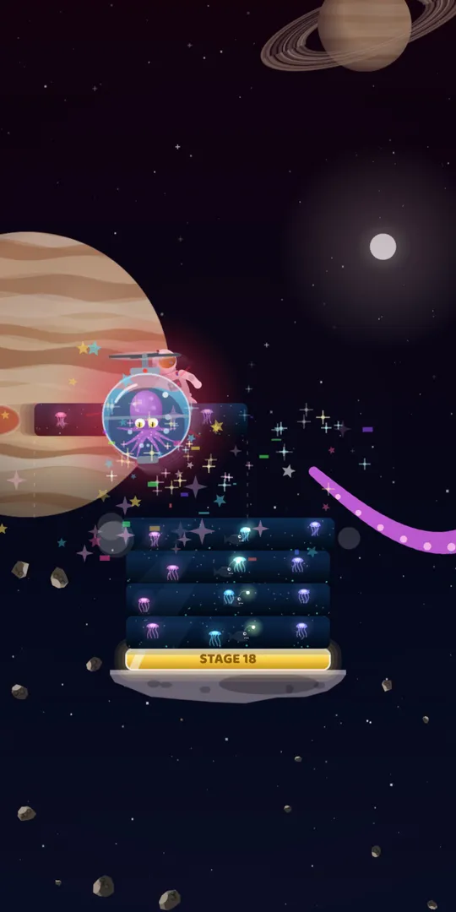

How to play
Stable takes one tap to learn. A block slides back and forth above your tower, and you decide when it drops.
Tap to drop
The block falls straight down from where it is. Watch its speed and drop it when it lines up with the block below.
Trim the overhang
Any part that hangs over the edge is cut off and falls. The next block is only as wide as what is left, so every miss makes the game harder.
Go for perfect
Land exactly on top and nothing is cut. Perfect drops in a row build a streak, and long streaks can make your block grow back.
The tower sways when it leans, so a lopsided tower can topple. Some stages add wind, ice, ghost blocks, bombs or smoke. Three power-ups help when it gets tight: the Magnet snaps your next block into a perfect, Slow-mo halves the speed for eight seconds, and the Shield forgives one miss.
Game modes
There is always something to play, whether you have one minute or one hour.
Campaign
120 stages in five chapters, each stage with its own goal: reach a height, land perfect drops, collect sunflowers or beat a boss. Every stage gives up to three stars.
Endless
One tower, no limit. Climb through the clouds, past the planets and out into space, and see how high you can go.
Daily Tower
A new tower every day, the same for everyone, with its own leaderboard and a login streak that rewards you for coming back.
Rhythm
15 songs, each with Easy, Normal and Hard. Drop on the beat to keep the groove going.
Wobble
Stack odd shapes into a tower that wobbles. Calm towers earn more stars.
Challenge
Play an Endless run and send the code to a friend. They play the exact same tower and try to beat your score.
Physics
Real physics: pick one of three random shapes, turn it, drag it and let go. Build as high as you can, or play freely in the sandbox.
Weekly tournament
Your best Endless tower of the week counts on the weekly leaderboard, and the top players win prizes when the week ends.




The campaign and its 20 bosses
Each chapter is a journey from the ground up, with a boss on stages 6, 12, 18 and 24. Bosses move, attack your tower and use a special move of their own. Every perfect drop hits the boss.
| Chapter | What makes it hard | Bosses |
|---|---|---|
| 1 · Rising Up | Icy blocks, wind and ghost blocks | UFO, Storm King, Kraken, Black Hole |
| 2 · Wild Lands | Shrinking blocks, speed and wind | T-Rex, Scorpion, Crocodile, Tornado |
| 3 · Frozen Factory | Ticking bombs, waves and ghosts | Robo-Crusher, Ice Ogre, Vampire, Frost Dragon |
| 4 · Lava Core | Smoke that hides your tower, quakes | Fire Spirit, Magma Golem, Lava Squid, Demon Lord |
| 5 · Cosmic Chaos | Every trick at once | Invader, Mothership, Dark Moon, The Void |


The last boss, The Void, has its own ultimate attack: Event Horizon. It opens a black hole above your tower. Land a perfect drop before the ring runs out and you seal it for big damage. Miss, and it eats the top of your tower.
Blocks, pets, worlds and your town
Everything is unlocked by playing. Coins and sunflowers come from every drop, every stage and every daily mission.
187 blocks
From classic stripes to pizza, pinball, bullet trains and pumpkins. Many have their own sound when they land.
43 pets
A pet rides on top of your tower and helps: the cat claws a missed block back, the fox brings extra sunflowers, the panda slows the block down.
16 worlds
Play Endless, Rhythm and Wobble in places like the Arctic, Candy Land, Neon City, Coral Reef or the Moon Base. Harder worlds pay more coins.
My Town
14 buildings appear one by one as you stack more. Each one gives a bonus to coins, sunflowers or XP, and grows when you upgrade it.
When you are ready for more, Rebirth starts you over with a bigger earnings multiplier, up to rebirth 10. There is also a 40-tier season pass, 46 achievements, daily missions and a daily login streak.
Tips for taller towers
- Watch the edge, not the middle. Line up the leading edge of the moving block with the edge of the tower below. It is easier to judge than the centre.
- Keep the streak. A perfect streak can make your block grow back. One safe, slightly early drop is better than a risky late one.
- Save the Magnet for bosses. A guaranteed perfect is worth the most when every perfect drop damages a boss.
- Mind the lean. If your tower leans, land the next blocks on the other side to balance it before it sways too far.
- Hit things on the way up. Birds, planes and balloons give bonus coins when your block bonks them, and some machines drop power-ups.
- Do the daily missions. Three missions a day plus the bonus chest are the fastest way to coins early on.
Questions
Is Stable free?
Yes. Stable is free to download and free to play. Everything in the game can be earned by playing. Optional purchases only save time or remove ads.
Do I need an internet connection?
Leaderboards, the weekly tournament and cloud backup need a connection. If the connection drops while you play, your scores are kept and sent when you are back online.
How do I move my progress to a new phone?
Open Settings and tap Backup and restore code. Write the code down, install Stable on the new phone and choose Restore my progress when it asks for your name.
What is a perfect drop?
A perfect drop lands exactly on top of the block below. Nothing is cut off, the block keeps its full width and your perfect streak grows.
Is my data safe?
Stable only stores what the game needs: your nickname, scores and game progress. You can delete it at any time from Settings or on our delete data page. Read the full privacy policy.
Who makes Stable?
Stable is made by Studio.grane, an independent game studio in Mo i Rana, Norway. Questions and ideas are welcome at studio@grane.app.